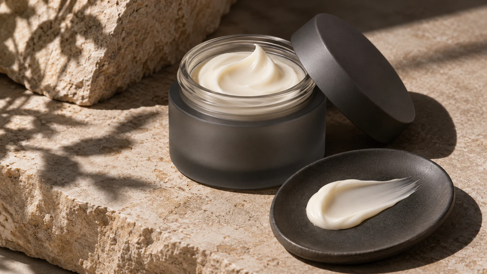
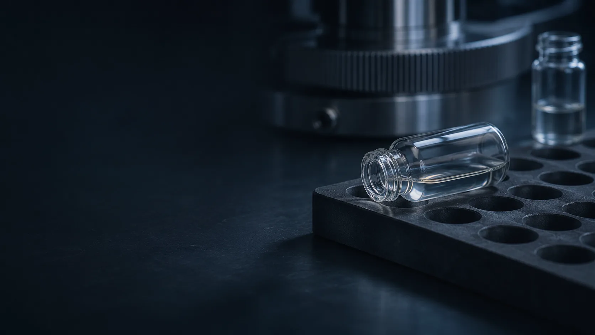

粉丝基础来自女装号 等于从 0 到 1
先用护肤干货涨自己的粉。
逐条完播、观看时长和涨粉需接手后查后台。
从这些数据里，我看到 4 个问题。
近 30 天账号完播率 · 账号数据快照
我们借什么
360.5 万粉丝11 月 18 日抖音主页
借创始人讲研发的方法，把核心原料和护肤品的关系讲给消费者听。
这条借什么先给期刊封面，再用研究图和机制动画带出研发思路。
34.6 万粉丝11 月 19 日抖音主页
用短问答、一张清单和一个道具，把一个专业问题讲简单。
这条借什么开场固定题签先抛出「奇怪但有用」的反差，十三秒只讲一个小话题。
103.9 万粉丝11 月 19 日抖音主页
从「选什么、怎么用」的困扰开头，再解释配方和成分。
这条借什么把「脸垮、泪沟只能做项目吗」摆在标题上，再把同一个问题带到现场问专家。
201.0 万粉丝11 月 18 日抖音主页
从日常护肤遇到的麻烦切入，用一个比喻和一个动作讲清技术。
这条借什么标题用「恨海情天」造出冲突，话题落在 A 醇，正文用引言和章节拆开讲。
78.5 万粉丝11 月 19 日抖音主页
把护肤知识拆成几个动作，让观众看完就能照着做。
这条借什么题目只提「闭口」一个具体困扰，四分钟视频用六个章节分段，方便观众找到自己关心的部分。
2362.8 万粉丝11 月 19 日抖音主页
带着观众的疑问去拍检测过程，用在后期「研发与产品」栏目。
这条借什么先问喷了为什么还没用，接手套剪开喷雾瓶的特写，把检查过程拍给观众看。
借来怎么用护肤干货从一个具体问题讲起，生活科学也用这个结构：先拍现象，再用实物把原因讲清楚。

主力 · 涨粉
成分表先看哪几行？护肤品说有效，怎么判断？
先聚焦胶原和抗老，这是张博做蛋白质结构最有发言权的地方。
托底 · 稳播放
已验证能涨流量的题材，用热点稳住播放。
让人记住并信任张博
有了英国永居，为什么回国？父亲哪句话，他到现在还记得？

后放 · 软广带出产品
一款面霜上架前要过哪些检测？稳定性测试在看什么？
干货开头 → 捎带介绍自家产品 → 干货收尾，产品只占中间一小段。
也可以试女性成长先拍 1–2 条，数据好再加。
先看张博想讲什么，再看评论区在问什么，近期热点作补充。张博想讲、观众也关心的，优先拍。
从现象切入，亮观点，提常见问题，给解法，最后提问或总结。前 3 秒说跟观众有关的冲突，段与段之间的话提前写好。讲产品的视频用「干货—产品—干货」的夹心结构。
趁状态好先拍封面，确认收音和设备，场记记下金句。每周 2–3 次，每次 1–1.5 小时拍 3–4 条，每条拿实物讲 60–90 秒。
先转逐字稿，删口语冗余，保留衔接，把金句或结论剪到开头。统一封面和字幕，尽量固定时间日更。
先核医美和功效说法，再看错别字、音画同步及字幕大小。编导核过后，交张博确认。
完播看能不能留住人，点赞率看观众是否认可，粉丝播放占比看有没有触达圈外人。周一读评论挑 3 个问题，结合数据定下周选题。
都在发布满 72 小时后比。基准取近 4 周自然播放的中位数，投放作品单独看。
第 1 个月
护肤干货 + 生活科学打底，四条主线一起试。
第 2 个月
固定表现好的栏目，穿插张博故事。
第 3 个月起
本号照常讲自家产品，但用软广。开头先给足干货，中间捎带介绍自家产品，结尾接着讲干货。平时仍以干货为主。
建议（可选） · 另开一个信息流号，专门给直播间引流。